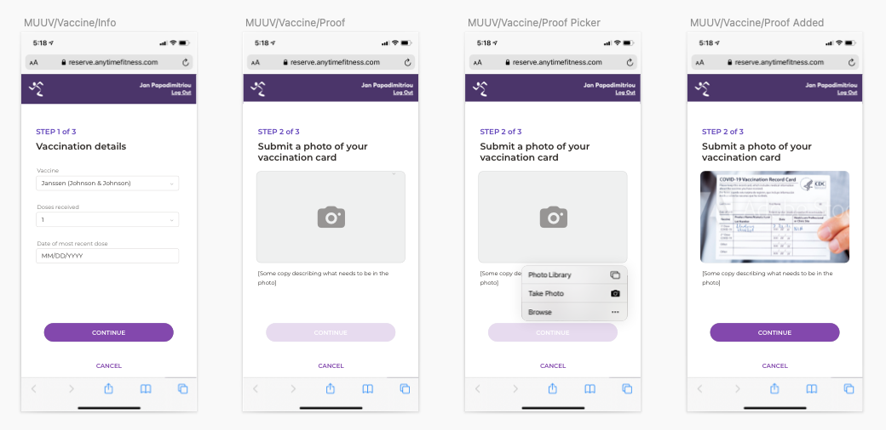
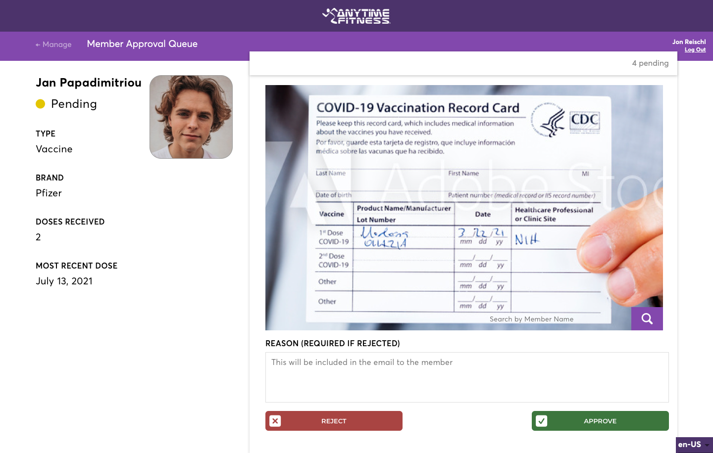
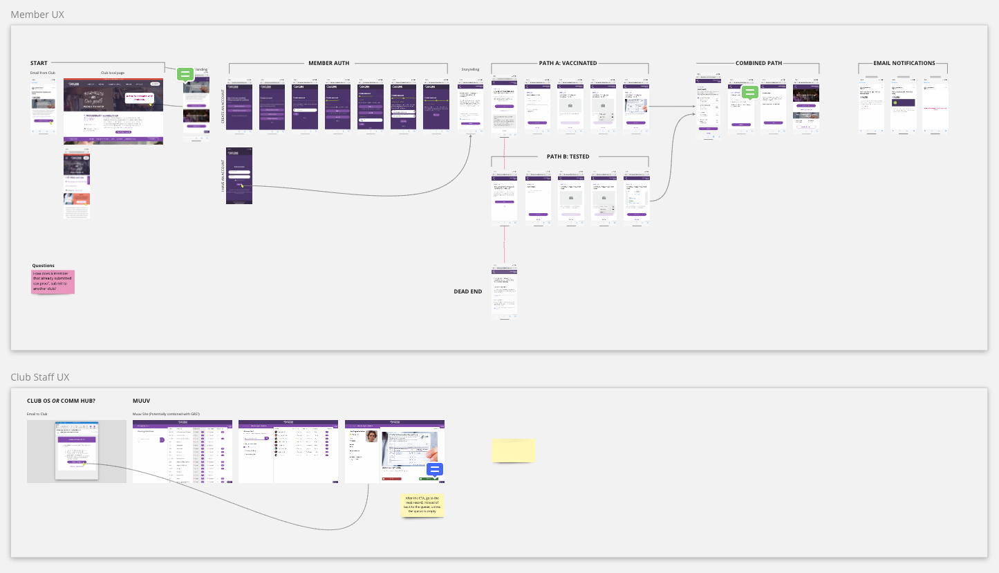
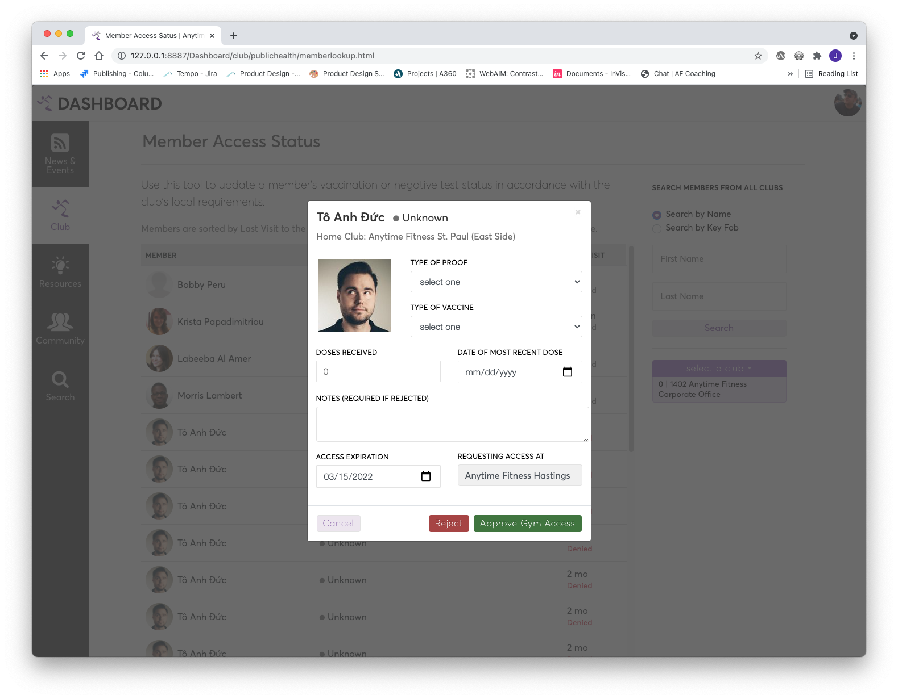

Concepts for rapidly developed solution allowing gym owners to manage access to their gyms during unstaffed hours based on local public health requirements. This project was fast-tracked in order to (as quickly as possible) provide a solution for franchisees in an environment where the rules and regulations surrounding public health protocols related to COVID-19 are changing on a daily basis.
The Anytime Fitness business model allows members to securely access the gyms 24/7 using a key fob. Gyms are typically only staffed during regular business hours. In areas where businesses must require proof of vaccination, after hours gym access needed to be revoked until members could present proof of their vaccination status.
My initial iteration on the UX included a multi-platform solution: the first being a mechanism where gym owners could opt-in to the system which would automatically notify gym members via email that their gym access was being revoked until they could present proof of vaccination. The email would link members to a secure portal where they could upload their documentation.

The gym would be notified of the submission, which would appear in a queue where gym staff could review the documentation and either approve or reject the member's after-hours gym access, in accordance with local requirements.

I used Miro to help stakeholders understand all the critical components to the complex, multi-tiered user experience. I leveraged a Sketch plugin for Miro to sync my design files with the board. This helped ensure that my collaborators on the Security, Development, and Operations teams were always seeing the freshest designs in a rapidly evolving environment.

Then we learned that citizens of Canada (et al.) are not allowed to reproduce their vaccine cards in any way. Since the member submission piece of this workflow relied on members photographing and uploading this information, that portion of the workflow was scrapped in favor of a more analog approach: members would need to present their documentation in person during staffed hours.
Despite being a much lower-tech solution, the system still required a method for gym staff to look up members and record their status in order to restore their gym access. I designed the interface so it would be flexible enough to support locations in a variety of circumstances. For example, some locations would be allowed to accept a negative COVID-19 test for unvaccinated members. We also built in a way for staff to set an expiration date, at which time the access would be revoked again and require fresh documentation.
